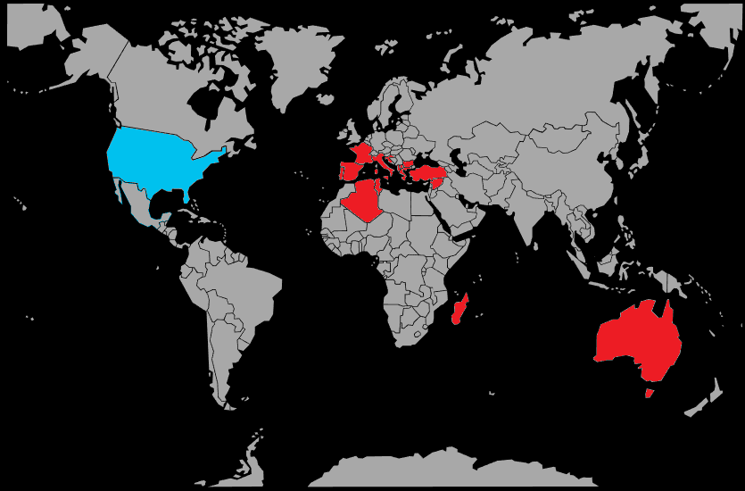

Systématique
- Ordre : Cyprinodontiformes
- Famille : Poeciliidae
- Genre : Gambusia
- Espèce : Gambusia holbrooki

Gambusia holbrooki est un petit poisson vivipare originaire de la côte est des États‑Unis, long de 3 à 4 cm chez le mâle et jusqu’à 6 à 8 cm chez la femelle bien nourrie.
Son corps est gris à brun translucide avec des reflets argentés, parfois ponctué de petites taches sombres; l’abdomen des femelles est souvent arrondi et laisse deviner les alevins avant la mise bas.
La gambusie vit surtout en surface et dans les zones très peu profondes, où elle forme des groupes plus ou moins lâches qui explorent sans cesse la surface et les bords du plan d’eau.
C’est une espèce vive, opportuniste et parfois agressive: elle peut harceler les poissons plus calmes, pincer les nageoires et monopoliser la nourriture, surtout dans les petits volumes surpeuplés.
Très tolérante aux variations de température et de qualité d’eau, elle supporte des conditions que beaucoup d’autres poissons ne toléreraient pas, ce qui contribue à son caractère invasif dans la nature.
Mode : ovovivipare; la fécondation est interne et la femelle met au monde des alevins complètement formés, capables de nager et de se nourrir dès la naissance.
La maturité sexuelle est très précoce, souvent en quelques semaines, et la gestation dure environ 3 à 4 semaines; une femelle adulte peut produire plusieurs portées sur une même saison, avec de 10 à plus de 50 jeunes par portée selon sa taille.
Les adultes, y compris la mère, n’hésitent pas à consommer une partie des alevins; une végétation dense, des plantes de surface ou des refuges permettent à davantage de jeunes de survivre si l’objectif est la reproduction.
Dimorphisme sexuel : le mâle est plus petit et trapu, avec un gonopode bien visible en guise de nageoire anale, alors que la femelle est plus grande, au ventre volumineux, et montre une tache de gestation sombre près de l’anus.
Espérance de vie : en captivité, la plupart des individus vivent 2 à 3 ans, parfois un peu plus si la densité, la qualité de l’eau et la nourriture restent adaptées, mais la population se renouvelle en continu grâce aux nombreuses naissances.
Dans la nature, l’espèce occupe les eaux lentes et peu profondes des rivières, marais, canaux d’irrigation, fossés et étangs, souvent proches de zones de végétation dense, de racines et de bordures vaseuses.
Elle supporte aussi bien l’eau douce que légèrement saumâtre, une large gamme de températures et même des eaux enrichies en nutriments, ce qui lui permet de coloniser facilement les milieux modifiés par l’homme.
Répartition

Origine naturelle :
- Bassins côtiers de l’Atlantique et du golfe du Mexique, dans l’est et le sud‑est des États‑Unis.
Introductions :
- De nombreuses introductions en Europe, Afrique, Asie et Océanie pour la lutte contre les moustiques.
Dans plusieurs régions, elle est aujourd’hui considérée comme une espèce invasive, capable de concurrencer et de faire reculer les petits poissons et amphibiens locaux.
Paramètres de maintenance
Température : environ 18 à 28 °C; l’espèce supporte ponctuellement des températures plus basses ou plus élevées si la variation est progressive.
pH : 6,8 à 8,5, avec une préférence pour une eau neutre à alcaline.
GH : 8 à 25 °dGH, l’espèce se porte mieux en eau dure à très dure que la plupart des poissons tropicaux classiques.
Courant : faible à modéré; elle apprécie surtout les zones calmes bien oxygénées, avec des plantes en surface et en bordure pour servir de refuge.
Volume conseillé : à partir de 80 à 100 L pour un groupe, avec un ratio de femelles supérieur au nombre de mâles afin de limiter le harcèlement reproducteur.
Régime alimentaire
Régime : omnivore à forte tendance carnivore; dans son milieu naturel, elle se nourrit de larves de moustiques, insectes tombés à la surface, petits crustacés, vers et zooplancton.
En aquarium, elle accepte sans difficulté les paillettes, granulés, nourritures congelées et vivantes; une base de nourriture sèche de qualité, complétée régulièrement par des proies vivantes ou congelées, la maintient en bonne santé.
Comme l’espèce est très gourmande, il est préférable de fractionner la ration quotidienne en plusieurs petits repas et d’éviter la suralimentation, surtout dans les bacs peu plantés.